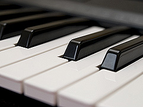
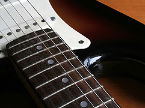
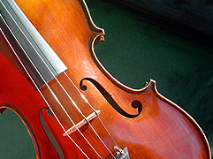

A Few Words About Us

We are a music school that offers comprehensive instruction in both theory and practice. You can also get private lessons, including private lessons from an Academy teacher right in your own home. All ages, from small children to senior citizens, are welcomed and taught if they wish to learn music. Whether you are a beginner, intermediate, or advanced music student, Orange County Music School School can help you become better.
Recitals and concerts are held at least twice a year to provide students with confidence-building performance experience. Theory classes are taught in preparation for exams of all levels concerning theory, history, harmony, counterpoint, and analysis. Full training is offered in repertoire, composition, performance technique, ear training, and sight-reading to prepare classical students for the Certificate of Merit Exam.
What We Offer
Piano

Guitar

Violin

Group Lessons

A group setting provides excitement, friends, and inspiration during the first 2-3 difficult years of piano/keyboard lessons. After completing the class, we encourage students to continue private lessons with the instructor of their choice.
Benefits Include:
Listening
Playing music in a group helps students learn to listen and stay together with the group.
Rhythm
Working in a group helps students strengthen rhythm skills.
Solfege
When we sing the solfege (do, re, mi) syllables while reading notes or playing the keyboard, we develop a strong sense of tonality and relative pitch.
Reading
Reading music is a separate activity from performing on the keyboard, and includes using tools such as music flash cards and "secret" ways of learning the notes that make it fun and easy.
Performing
Students perform every piece by memory in front of the class, thus preparing to perform in the recitals at an early age.